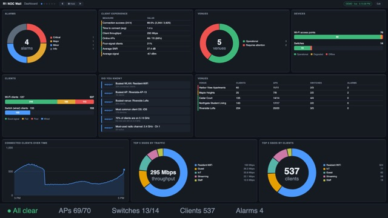
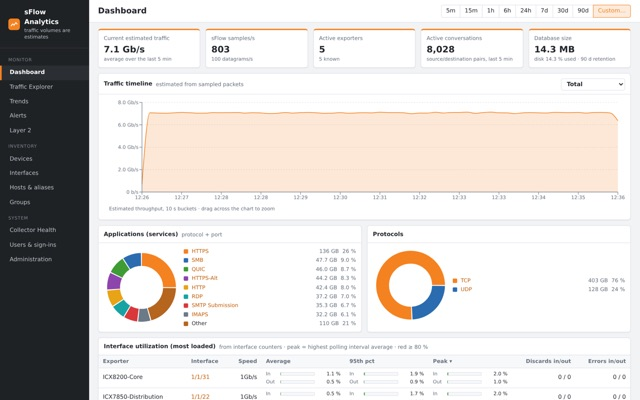
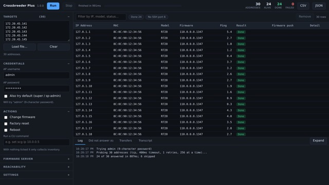
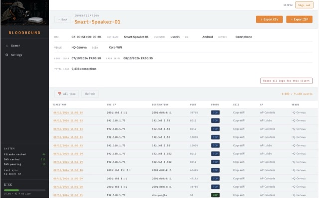
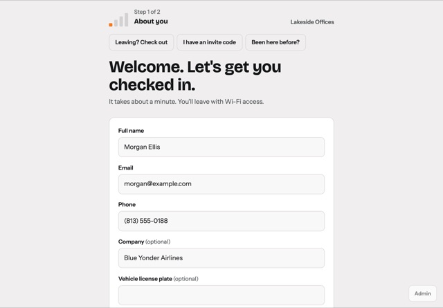

Coding projects from RUCKUS team members
-

RUCKUS One API Inspector
By Terry Henry
A browser extension for observing and visualizing API requests made by the RUCKUS One web interface.
-

R1 NOC Wall
By Terry Henry
A server-side NOC wall display for RUCKUS One — for a single site or a whole managed-service business.
October 2026 -

sFlow Analytics
By Frederic Muffat-Es-Jacques
Self-hosted sFlow collector and traffic analytics for RUCKUS ICX switches (and any sFlow v5 device).
October 2026 -

Crossbreeder Plus
By Andrea Coppini
Bulk firmware changes, inventory and CLI work across standalone Ruckus access points — many at a time instead of one after another.
October 2026 -

Bloodhound
By Frederic Muffat-Es-Jacques
WiFi network investigation platform for Ruckus infrastructure. Bloodhound ingests and enriches syslog/flow logs from Ruckus WiFi…
October 2026 -

Visitor Desk
By Terry Henry
Visitor check-in and Wi-Fi for RUCKUS One, as a ready-to-run virtual appliance for VMware ESXi and vSphere.
October 2026
No projects match that search.